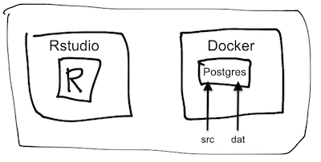

R, Databases and Docker
2018-12-22
Chapter 1 Introduction
At the end of this chapter, you will be able to
- Understand the importance of using R and Docker to query a DBMS and access a service like Postgres outside of R.
- Setup your environment to explore the use-case for useRs.
1.1 Using R to query a DBMS in your organization
1.1.1 Why write a book about DBMS access from R using Docker?
Large data stores in organizations are stored in databases that have specific access constraints and structural characteristics.
* Data documentation may be incomplete, often emphasizes operational issues rather than analytic ones, and often needs to be confirmed on the fly.
* Data volumes and query performance are important design constraints.R users frequently need to make sense of complex data structures and coding schemes to address incompletely formed questions so that exploratory data analysis has to be fast. * Exploratory and diagnostic techniques for the purpose should not be reinvented and would benefit from more public instruction or discussion.
Learning to navigate the interfaces (passwords, packages, etc.) or gap between R and a database is difficult to simulate outside corporate walls.
* Resources for interface problem diagnosis behind corporate walls may or may not address all the issues that R users face, so a simulated environment is needed.Docker is a relatively easy way to simulate the relationship between an R/Rstudio session and database – all on a single machine.
1.2 Docker as a tool for UseRs
Noam Ross’s “Docker for the UseR” suggests that there are four distinct Docker use-cases for useRs.
- Make a fixed working environment for reproducible analysis
- Access a service outside of R (e.g., Postgres)
- Create an R based service (e.g., with
plumber) - Send our compute jobs to the cloud with minimal reconfiguration or revision
This book explores #2 because it allows us to work on the database access issues described above and to practice on an industrial-scale DBMS.
- Docker is a relatively easy way to simulate the relationship between an R/RStudio session and a database – all on on a single machine, provided you have Docker installed and running.
- You may want to run PostgreSQL on a Docker container, avoiding any OS or system dependencies that might come up.
1.3 Docker and R on your machine
Here is how R and Docker fit on your operating system in this tutorial:
 (This diagram needs to be updated as our directory structure evolves.)
1.4 Who are we?
We have been collaborating on this book since the Summer of 2018, each of us chipping into the project as time permits:
- Dipti Muni - @deemuni
- Ian Franz - @ianfrantz
- Jim Tyhurst - @jimtyhurst
- John David Smith - @smithjd
- M. Edward (Ed) Borasky - @znmeb
- Maryanne Thygesen @maryannet
- Scott Came - @scottcame
- Sophie Yang - @SophieMYang
1.5 How did this project come about?
We trace this book back to the June 2, 2018 Cascadia R Conf where Aaron Makubuya gave a presentation using Vagrant hosting. After that John Smith, Ian Franz, and Sophie Yang had discussions after the monthly Data Discussion Meetups about the difficulties around setting up Vagrant, (a virtual environment), connecting to a corporate database and having realistic public environment to demo or practice the issues that come up behind corporate firewalls. Scott Came’s tutorial on R and Docker (an alternative to Vagrant) at the 2018 UseR Conference in Melbourne was provocative and it turned out he lived nearby. We re-connected with M. Edward (Ed) Borasky who had done extensive development for a Hack Oregon data science containerization project.